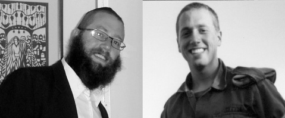
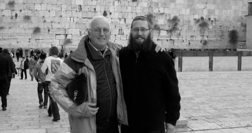

The American Dream and a Dream of the Rebbe
Tzvi Naiman achieved the dream of every Israeli and was living the good life in Los Angeles. However, his neshama sought something else, something real. He was inspired on an ordinary Friday in Baltimore and things took off from there.

Tzvi Naiman was born in Yerushalayim to parents who had arrived in Eretz Yisroel after the war. His father is a scion of a distinguished Litvishe family and grew up in a religious home, but he left Jewish practice in his youth and integrated into secular Israeli society. His mother’s family is from a HaShomer HaTzair kibbutz (which is virulently anti-religious). Tzvi was raised in an irreligious home, though his parents tried to preserve some tradition and provided him with a minimal Jewish education. The family celebrated holidays with the father’s religious relatives.
“We celebrated every Pesach together and had a proper Seder. I remember the entire family sitting together and singing Modzitzer and Tolna niggunim. As a child, I wanted very much to be like them. I felt a tremendous longing for religious life. The niggunim and the atmosphere always fascinated me. As a child, I thought it was natural to be part of a religious family.”
However, the boy grew up and felt estranged from religious life:
“I was repelled by a faith-based mindset and favored rational understanding and philosophy. I was an avid reader of philosophical books. As I got older I moved away from the traditions I had grown up with and eventually, while in the army, decided to drop tradition entirely. It felt trite to me to keep just a few Jewish practices, just to fulfill some obligation. I said to myself that if one day I would discover that this is actually the truth and would decide that one should keep Torah and mitzvos, then I would not be satisfied with a few symbolic gestures and would go all the way.”
Tzvi used his free time to study philosophy. He sought the truth but based his search on logic. He studied science and tried to understand the secret of existence. Today, he realizes that he was lacking Chassidus that bridges faith and science and explains how “there is nothing but Him” within nature, but back then, he saw science as a contradiction to Torah. As part of this process, Tzvi also distanced himself from the Israeli education that he received. The day he completed his army service he was on a plane to Los Angeles. He had an uncle there who promised to open the door to the wide world for him.
SHABBOS MEAL IN THE MIDDLE OF THE FESTIVAL
“I flew to Los Angeles on a one-way ticket and had no idea if I’d ever return to Eretz Yisroel. I continued to move away from the little Judaism that I knew and did not even make Kiddush on Friday night. In Los Angeles, I encountered materialism in the fullest sense of the word. I stayed with my uncle who is very wealthy and has it all. He lived in Malibu, which is a well-to-do coastal city. As his relative, I lacked for nothing. I worked for him around the clock including Shabbos and Yom Tov and was far removed from any spiritual pursuits.
“After a few months, I felt that I had already reached the summit. There is no bigger dream for an Israeli kid than life full of material pleasure. Having gotten this far, I began to feel an emptiness.
“I had an offer to fly to a job at a festival in Baltimore on the East Coast. Since I was starting to feel disgusted with the sparkling life of California, I accepted the offer. I went to Baltimore for a few weeks and suddenly felt a yearning for k’dusha. I can’t explain it, but on the last Friday that I was there, I dialed 411 and asked for the number of a Chabad house so I could go there that night.
“I didn’t know much about Chabad, but I remembered Chabad at the airport when I left Eretz Yisroel. I saw the logo ‘Chabad – Your Address for Everything Jewish’; it stuck in my mind. I had once heard that Lubavitcher Chassidim host Jews abroad, but I had never connected Chabad with Lubavitch. So when I called for information I asked the operator to give me two addresses, one for the local Chabad organization and one for Lubavitch.
“I called the Chabad house. The shliach, Rabbi Kaplan, graciously invited me to his home for the entire Shabbos. I arrived feeling apprehensive, thinking that their goal is to get me to do t’shuva. All I wanted was to spend Shabbos with them and get a taste of home.
“It was a marvelous experience and I was surprised to discover that they didn’t force me to do anything. They gently suggested that I go to shul with them and I was happy to do so.
“At night, I dreamed that I saw a ship on the sea with a man on board who had a white beard and a shining face. He made encouraging motions with his hands. It was an awesome vision and when I woke up it was hard for me to calm down. I lay in bed without being able to sleep and in the morning, I noticed a picture of the Rebbe hanging in the living room of the Kaplan home. I immediately connected the man in my dream with the Rebbe. I told R’ Kaplan my dream and wondered how I had seen the Rebbe in a dream when I had never gazed upon his picture before.
“Thoughts about the Rebbe, who sends his Chassidim to far flung places in the world, began to disturb me. Why did the Rebbe do this? What motivated his Chassidim to care about every Jew like me, who finds himself in the middle of Baltimore, spending Shabbos with strangers? And why did his face shine?”
CHABAD HOUSE AT THE CROSSROADS
Tzvi returned to Los Angeles with nagging thoughts. The trip from the airport to his uncle’s house took a few hours in the course of which he began to think about eating kosher. He began to feel uncomfortable with being indiscriminate about what he put into his mouth. When he arrived in Malibu, his aunt was waiting for him in her car. When they made a stop to do some shopping, he shared his thoughts with her. Without much ado, his aunt pointed out a sign on the upper floor of the building across the way which said: Chabad House – Malibu.
Tzvi was astounded by this. He couldn’t believe the serendipity of discussing his desire to renounce treif food while standing opposite a Chabad house.
“I was absolutely stunned by this since it all seemed to occur naturally, as though it was the most obvious thing that there would be a Chabad house across from where we were standing.”
The next day, Tzvi visited the Chabad house and asked to speak with the shliach, Rabbi Levi Cunin.
“I asked him some questions about Judaism and the Rebbe. Then I asked him, ‘How is it that you Chabadniks refer to the Rebbe as being alive?’ Till today, I don’t know why this question occurred to me, but I had heard things about this in the past and I was interested in knowing what lay behind the belief of Chassidim. R’ Cunin, in his inimitable manner, asked me whether I believed that G-d could put an elephant through the eye of a needle. I said that I had to think about it. He said I had a lot to learn in order to understand what emuna is.”
Tzvi became involved at the Chabad house and visited on Shabbasos. The atmosphere and the people drew him in. Once again, he experienced Shabbos and Yomim Tov and reconnected to Jewish life.
“I would drive to the Chabad house for Shabbos and did not feel that there was a problem with this. I decided to strengthen my ties with Judaism and be more connected with Jewish life.”
After some time, he felt it no longer suited him to live in his uncle’s house and he decided to rent a small place for himself in the Jewish neighborhood in nearby Fairfax.
“When I checked out the room I saw a picture of the Rebbe on the wall. I asked the landlady why it was hanging there and she said that the previous tenant had left it. Once again, I felt that the Rebbe was watching and guiding me and that wherever I went, he was with me.
“At this time, I went through a very deep spiritual journey in terms of my longing for spirituality and the truth. I realized that everything I had thought or believed until that point was based on the insights of human minds that were based on some rational system or another; but they were not connected to a higher truth. I suddenly felt that something true was speaking to me. Far from home I was meeting people who had faith, and for the first time could listen to them without preconceived ideas or a negative attitude.”
THE SIGN
Tzvi felt the pull of Judaism and asked G-d to give him a sign so he could be assured he was on the right path.
“One day, I went to an area where many Israelis live so I could buy kosher food. I wasn’t keeping kosher yet, but I tried to buy kosher food from time to time. I met an Israeli in a store and I asked him about Israeli food. In response, he told me he was on his way to a party of Israelis and he suggested that I join him. I was happy to do so.”
When Tzvi walked in to the party, he was surprised to see a hall full of Israelis, many of whom wore a kippa, and there was Jewish music playing in the background. Some Chabad Chassidim welcomed him and they said it was Chai Elul. He had come to the Chabad house for Israelis in Los Angeles, which is directed by Rabbi Amitai Yemini.
“I couldn’t get over it. Once again, I had inadvertently ended up at a Chabad house.”
At the entrance to the hall were a number of tables around which people were sitting and writing on white sheets of paper. Tzvi was invited to write a letter to the Rebbe. He wrote briefly about what he had recently experienced and asked for a bracha. He put his letter into a volume of Igros Kodesh and was amazed to read the letter that began with the words, “Dear Mr. Zerubavel, the dream that you had is a sign and wonder and should not be treated lightly by you …” Later on, he discovered that the letter had been written to R’ Dovid Leselbaum of Kfar Chabad for a relative of his, the poet Zerubavel. The Rebbe was writing about a dream the poet would have a few days later, which was an incredible thing. He also discovered that this is the only letter in which the Rebbe seriously addresses dreams, for in most letters on the topic, the Rebbe dismisses them. However, at that moment, without appreciating the double significance of the letter he had opened to, Tzvi was still taken aback by what he read. He found it hard to digest the precision of the answer that responded so specifically to what he was going through, considering that his whole process of return had begun with a mysterious dream in which he had seen the Rebbe.
Tzvi felt that he had received a clear sign that there is Divine Providence, which was leading him step by step, and that there are no coincidences.
“The change was difficult because I suddenly grasped the extent of all the small details of keeping mitzvos that apply throughout the day, but still I decided to be careful about mitzva observance. That Elul I was very inspired and I walked around with a strong feeling of having found the truth.”
YOM KIPPUR IN 770
Tzvi ordered a ticket for Baltimore so he could spend Yom Kippur at the Chabad house there. Before that, he had heard about 770 and as one person described it, “It’s a place where 24 hours turn into 48 hours and every minute is precious.” He found the stories about 770 intriguing but he had no plans of going there at that point.
On his flight from Los Angeles, the pilot unexpectedly announced that the plane had to land in New York. Tzvi went over to the stewardesses and asked to be allowed off the plane. After some back and forth, they allowed him to take his belongings and leave. There he was, in New York, looking for the red brick building he had heard about with the address of 770 Eastern Parkway. To his amazement, when he asked a black man on the subway whether he knew the place, the man said, “Sure, it’s the house of the Lubavitcher Rebbe.”
Tzvi arrived at 770 on Erev Yom Kippur and immediately felt at home.
“I felt I had come to my natural place. I felt I had come home.”
He stood during the t’fillos, crushed in the crowd, and nothing bothered him.
“The crowding merely added to the elevated feeling that I had. I have no rational explanation for what I felt. Till today, I remember that feeling with nostalgia. In the middle of the davening I began to sob and I felt an outpouring of the soul and a tremendous yearning to be a part of what I was feeling. All the Chassidim crowding in the shul with a bittul, all packed together without any feeling for their individual selves, had a huge impact on me. I thought – how is it possible that I haven’t known this Judaism until now? I felt I had been wronged. Why hadn’t anyone told me that there was a Judaism like this? Religious Jews had been depicted as arrogant and I thought they did not know how to relate to people different than themselves. In 770 I felt that they all truly loved me. People spoke to me and made sure I was provided with warm hospitality. I felt that I had found where I belong. I had never seen anything like this and wanted to get better acquainted.”
Tzvi stayed in 770 for Sukkos, in the course of which he got to see the joy of Simchas Beis HaShoeiva and Simchas Torah. The tremendous simcha, the dancing and excitement won him over. He joined in the simcha as though he was a Chassid like everyone else. For the first time in his life, he cried with joy and did so more than once.
“As someone who came from the big world out there, I had met people who tried all sorts of ways of achieving happiness, but here there was genuine simcha without the need to chase far out experiences; just plain simcha of Chassidim who know how to dance and truly rejoice.”
LEARNING CHASSIDUS REVEALED A NEW WORLD
At this point, Tzvi decided his life had to change. He resolved not to return to Los Angeles and he went back to Eretz Yisroel. A few weeks after he returned, he joined a tour to the graves of tzaddikim in the Galil. They went to Tzfas and while there, he had the idea of looking up the bachurim whom he had met in 770 during Tishrei. He went to the yeshiva intending on staying a few minutes but the atmosphere drew him in. He told his friends on the tour that he would not be continuing with them, since he was staying to learn in yeshiva. He spent half a year there.
“I related to the ideas in Chassidus, in Tanya. I remember farbrengens and mashpiim who made a tremendous impression on me. I was particularly taken by the idea that in Chabad, the Rebbe gives us the strength to work on our own and that we are expected to do the work. The truth of Chassidus and the demand that every Chassid be involved in avoda spoke to my heart. In Chassidus I also learned that there is no contradiction between faith and science and that the Rebbe teaches us how Hashem’s Torah illuminates everything within creation.
“One of the things that made a great impact on me was Tanya’s discussion about ‘a tzaddik who has it bad and a rasha who has it good,’ and questions about the meaning of life. The very fact that there is a spiritual world and a spiritual reality that affects the world impressed me very much. Until then, I had thought that Judaism only deals with heaven and hell. I didn’t know it discussed the hidden, inner dimension of the world. I was astounded to discover in Chassidus the idea that the world was created out of nothing. I realized that there are spiritual worlds and a lofty spiritual reality that we cannot fully apprehend, but we can learn about it and understand how things operate and affect our lives in this world.”
Today, Tzvi is working on an Internet project that will help Chabad houses around the world. As a hi-tech person who is an expert on creating data networking systems, he worked for Aish HaTorah. There, he saw that they have a cooperative network between all their branches worldwide. The network enables the sharing of data on whoever visits one of their branches so that a colleague in a different branch can pick up where the other one left off. With this new project, Tzvi plans on connecting thousands of Chabad houses.
“We received many brachos from the Rebbe through the Igros Kodesh for this undertaking and we hope that it will be another step in completing the only shlichus that remains to be done – kabbalas p’nei Moshiach Tzidkeinu.”
BOX:

After becoming a baal t’shuva, Tzvi discovered that his oldest uncle, his mother’s brother, had never put on t’fillin. The grandfather had come from Munkatch, but had broken his ties with Judaism after the Holocaust, and the family that was raised on the kibbutz knew almost nothing about Judaism. Tzvi decided to make a bar mitzva for his 70 year old uncle and invited him to the Kosel where he put t’fillin on with him for the first time. He gave him a gift of t’fillin that had belonged to his father.
Sholom Ber Crombie. "The American Dream and a Dream of the Rebbe." Beis Moshiach, no. 831 (April 22, 2012).